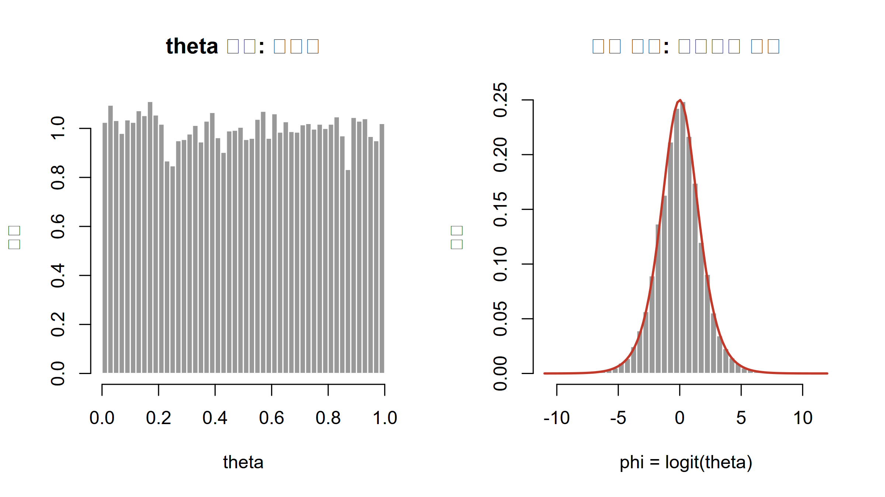
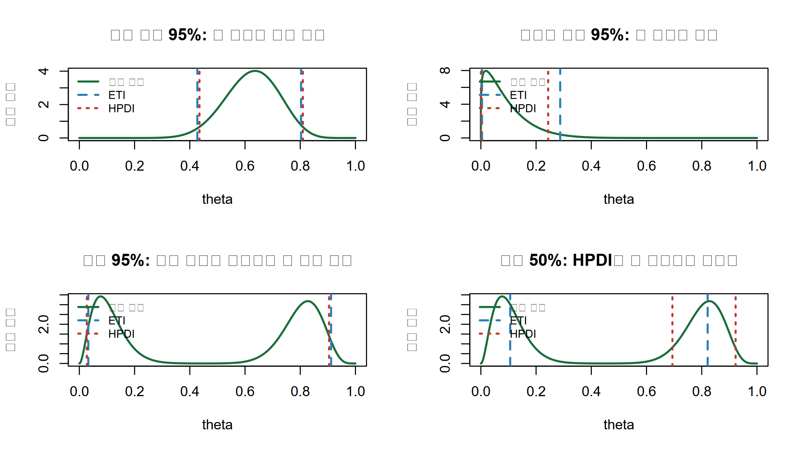
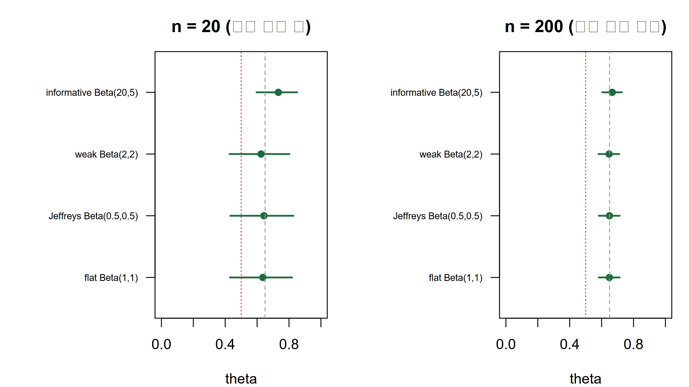
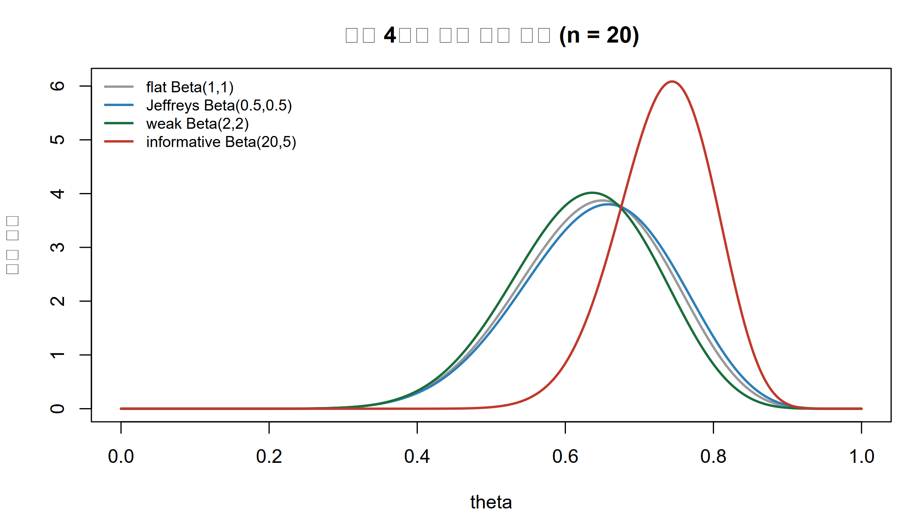

사전분포의 종류와 민감도 분석, 사후 점요약, 신용구간(ETI/HPDI), 사후예측분포를 base R로 직접 구현합니다.
Author
Eunji Ha
Published
September 21, 2026
학습 목표
정보적, 약정보적, 무정보적, Jeffreys 사전의 차이를 설명하고 상황에 맞게 고를 수 있다.
평평한 사전이 모수 변환에서 평평함을 잃는다는 점을 예로 보일 수 있다.
사전 민감도 분석을 설계하고 표와 구간 그림으로 보고할 수 있다.
사후 평균, 중앙값, MAP와 ETI, HPDI를 base R로 직접 계산할 수 있다.
사후예측분포를 수식과 시뮬레이션 두 방법으로 구하고 점추정 대입과의 차이를 설명할 수 있다.
들어가며
새로 도입한 변이 검출 파이프라인의 정확도를 확인한다고 합시다. 파이프라인이 내놓은 후보 변이 20개를 Sanger 시퀀싱으로 검증했고 그중 13개가 실제 변이로 확인되었습니다(가상의 데이터입니다). W2에서 본 대로 성공확률 \(\theta\)에 베타 사전을 두면 사후도 베타가 됩니다. 문제는 그 다음입니다. 사전을 무엇으로 둘지, 사후분포를 숫자 몇 개로 어떻게 줄여 보고할지, 다음 배치 20개에서 몇 개가 검증될지 어떻게 예측할지가 남아 있습니다. 이번 주는 이 세 가지를 다룹니다. 특히 심사자가 가장 자주 묻는 “사전을 바꾸면 결론이 달라지지 않느냐”에 답하는 절차, 즉 사전 민감도 분석(prior sensitivity analysis)을 정식 분석 단계로 넣습니다.
사전분포의 종류
사전분포(prior distribution)는 데이터를 보기 전 모수에 대해 아는 것을 확률분포로 적은 것입니다. 실무에서는 네 유형으로 구분하면 충분합니다.
정보적 사전(informative prior): 선행 연구나 실험실 경험에서 나온 구체적 정보를 담습니다. 같은 파이프라인의 이전 버전이 100개 중 78개를 맞혔다면 Beta(78, 22) 근처를 씁니다. 표본이 작을 때 큰 도움이 되지만 근거를 논문에 명시해야 합니다.
약정보적 사전(weakly informative prior): 방향과 규모만 제한합니다. Beta(2, 2)는 \(\theta\)가 0이나 1에 딱 붙는 것을 약하게 누르되 0.2든 0.8이든 거의 동등하게 허용합니다.
무정보적 사전(flat prior): Beta(1, 1), 즉 균등분포입니다. 아무 정보도 넣지 않았다는 인상을 주지만 아래에서 보듯 정확한 표현이 아닙니다.
Jeffreys 사전: Fisher 정보량의 제곱근에 비례하도록 정의한 사전으로, 이항모형에서는 Beta(0.5, 0.5)가 되며 모수를 어떻게 다시 쓰든 같은 사전이 나옵니다.
무정보적 사전은 정말 무정보인가
균등분포는 모든 값을 똑같이 본다는 뜻처럼 들립니다. 그런데 모수를 다른 척도로 옮기면 그 평평함이 사라집니다. 로지스틱 회귀에서 실제로 다루는 양은 확률 \(\theta\)가 아니라 로짓 \(\phi = \log\{\theta/(1-\theta)\}\)인 경우가 많으므로, \(\theta\)에서 평평한 사전이 \(\phi\) 척도에서 어떤 모습인지 표본으로 확인합니다.
set.seed(42)theta_flat <-runif(20000) # 평평한 사전 Beta(1,1)에서 뽑은 표본phi_flat <-log(theta_flat / (1- theta_flat)) # 로짓 변환par(mfrow =c(1, 2))hist(theta_flat, breaks =40, freq =FALSE, col ="grey60", border ="white",main ="theta 척도: 평평함", xlab ="theta", ylab ="밀도")hist(phi_flat, breaks =60, freq =FALSE, col ="grey60", border ="white",main ="로짓 척도: 평평하지 않음", xlab ="phi = logit(theta)", ylab ="밀도")curve(exp(x) / (1+exp(x))^2, add =TRUE, col ="#c0392b", lwd =2) # 표준 로지스틱 밀도

로짓 척도의 사전은 0 근처에 몰려 있습니다. \(\theta\)에 대해 무정보라는 말은 \(\phi\)에 대해서는 상당히 정보적이라는 뜻입니다. 무정보성은 모수 척도를 지정해야만 의미가 있습니다.
인데 이는 위의 밀도 변환 규칙과 정확히 같은 형태입니다. 따라서 어느 척도에서 만들든 같은 사전이 나옵니다(변환 불변성). 이항모형에서는 \(I(\theta) = n/\{\theta(1-\theta)\}\)이므로 \(p(\theta) \propto \theta^{-1/2}(1-\theta)^{-1/2} = \mathrm{Beta}(0.5, 0.5)\)가 됩니다. 기호: \(I\)는 Fisher 정보량, \(n\)은 시행 횟수, \(\theta\)는 성공확률입니다.
왜 약정보적 사전을 기본값으로 쓰는가
핵심 직관
약정보적 사전은 정답을 미리 정해 주는 장치가 아니라 말이 되는 범위를 알려 주는 장치입니다. 발현 배수변화가 \(10^{6}\)배일 리 없고 검증 성공확률이 정확히 0이거나 1일 리 없습니다. 이런 상식을 넣어 두면 세 가지 이득이 있습니다. 첫째, 표본이 작거나 분리(separation)가 일어나도 사후가 발산하지 않습니다. 둘째, MCMC가 극단 영역을 헤매지 않아 수렴이 빨라집니다. 셋째, 결과가 해석 가능한 범위에 머무릅니다.
20개 중 20개가 모두 검증된 경우(\(y=20\), \(n=20\)) 평평한 사전의 사후 평균은 \(21/22 = 0.955\)지만, 사전을 쓰지 않는 최대가능도추정은 \(\hat\theta = 1\)이 되어 다음 100개도 전부 검증된다는 예측을 내놓습니다. 약한 사전 하나가 이 비현실적 결론을 막습니다.
사전 민감도 분석
주 분석에 쓸 기본 사전(대개 약정보적 사전)을 정하고 근거를 적습니다.
대안 사전을 3~4개 고릅니다. 최소한 평평한 사전, Jeffreys 사전, 결론과 반대 방향으로 치우친 정보적 사전을 포함합니다.
각 사전에 대해 동일한 사후 요약(평균, 95퍼센트 구간, 관심 가설의 사후확률)을 계산합니다.
표와 구간 그림으로 나란히 보고하고 결론이 바뀌는지 한 문장으로 명시합니다. 결론이 사전에 따라 달라진다면 실패가 아니라 정보입니다. 현재 데이터만으로는 결정할 수 없다는 사실 자체가 보고할 가치가 있습니다.
사후 요약: 평균, 중앙값, 최빈값
사후 평균(posterior mean): 제곱오차 손실을 최소화합니다. 기본값으로 무난합니다.
사후 중앙값(posterior median): 절대오차 손실을 최소화하고 단조변환에 불변합니다. \(\theta\)의 중앙값에 로짓을 취하면 \(\phi\)의 중앙값이 됩니다. 비대칭 사후에서 평균보다 안정적입니다.
최빈값 또는 MAP(maximum a posteriori): 사후 밀도가 가장 높은 점입니다. 최적화만으로 구할 수 있어 싸지만 고차원에서는 분포의 대표값으로 부적절한 경우가 많습니다.
중앙값은 닫힌 형태가 없어 수치적으로 구합니다(qbeta(0.5, a_post, b_post)). \(a^{*}+b^{*}\)가 커질수록 세 값은 서로 가까워집니다.
신용구간: ETI와 HPD 영역
신용구간(credible interval)은 사후확률이 지정한 만큼 담긴 구간입니다. 같은 95퍼센트라도 고르는 방식이 여럿입니다.
동일꼬리구간(equal-tailed interval, ETI): 양쪽 꼬리에 각각 2.5퍼센트를 남깁니다. 분위수만 알면 되고 단조변환에 불변합니다.
최고사후밀도 영역(highest posterior density region, HPD region): 밀도가 높은 점부터 차례로 담아 지정한 확률을 채운 집합입니다. 영역 안의 모든 점이 영역 밖의 모든 점보다 사후 밀도가 높습니다. 사후가 단봉이면 이 영역이 하나의 연속 구간이 되고, 이때 같은 확률을 담는 구간 중 가장 짧으므로 최고사후밀도구간(highest posterior density interval, HPDI)이라 부릅니다. 봉우리가 둘 이상이면 영역이 여러 조각으로 끊어질 수 있습니다.
사후가 대칭 단봉이면 ETI와 HPDI는 거의 같고, 단봉이라도 한쪽으로 심하게 치우쳐 있으면 갈립니다. 봉우리가 둘일 때는 사정이 다릅니다. 어느 한 봉우리가 담은 확률이 지정한 신뢰수준보다 작으면 구간 하나로는 그 수준을 채울 수 없으므로, 구간 형태의 요약은 ETI든 HPDI든 밀도가 거의 0인 골짜기를 포함하게 됩니다. 이를 피하려면 구간이 아니라 여러 조각을 허용하는 HPD 영역이 필요합니다. 다만 아래에서 구현하는 hpdi()와 hpdi_grid()는 결과를 언제나 c(lower, upper) 하나로 돌려주는, 즉 연속 구간만 반환하는 구현이라 참 HPD 영역이 두 조각일 때도 그 둘을 감싼 최소 구간을 보고합니다.
신용구간과 신뢰구간은 다른 것을 말합니다
95퍼센트 신용구간 [0.43, 0.80]은 현재 데이터와 사전을 조건으로 \(\theta\)가 이 구간에 있을 확률이 0.95라는 진술입니다. \(\theta\)가 확률변수이므로 이 문장이 성립합니다. 반면 95퍼센트 신뢰구간(confidence interval) [0.43, 0.80]은 그런 뜻이 아닙니다. 빈도주의에서 \(\theta\)는 고정된 미지의 상수이고 구간이 확률변수입니다. 95퍼센트는 절차의 장기 포함률, 즉 같은 실험을 무한히 반복해 매번 이 방법으로 구간을 만들면 그중 95퍼센트가 참값을 덮는다는 뜻입니다. 지금 손에 든 특정 구간 하나에 대해서는 덮었거나 아니거나일 뿐 확률을 말할 수 없습니다. 두 구간의 숫자가 비슷하게 나오는 경우가 많지만 그것은 우연이지 같은 의미라는 뜻이 아닙니다.
사후예측분포
사후예측분포(posterior predictive distribution)는 아직 관측하지 않은 데이터 \(\tilde{y}\)의 분포이며, 핵심은 모수의 불확실성을 적분해 없앤다는 점입니다. 사후 평균 \(\hat\theta\) 하나를 꽂아 \(\mathrm{Binomial}(m, \hat\theta)\)로 예측하면 \(\theta\)를 정확히 안다고 가정한 셈이라 예측 구간이 실제보다 좁아집니다. 표본이 작을수록 과소평가가 심합니다.
대칭에 가까운 Beta(15, 9) 사후에서는 두 구간이 [0.427, 0.803]과 [0.435, 0.810]으로 폭까지 사실상 같습니다(0.376 대 0.374). 반면 최빈값이 0.018로 왼쪽 경계에 바싹 붙은 Beta(1.2, 12) 사후에서는 ETI가 [0.0042, 0.2873], HPDI가 [0.0003, 0.2438]으로 확실히 갈립니다. HPDI는 밀도가 가장 높은 0 쪽을 버리지 않으려고 하한을 0에 붙이고 그만큼 상한을 당겨, 폭이 0.283에서 0.244로 14퍼센트 짧아집니다. 단봉이어도 비대칭이 강하면 어느 구간을 썼는지가 보고에 직접 영향을 줍니다. 이제 봉우리가 둘인 사후로 넘어갑니다.
# 사후 밀도 위에 ETI(파랑)와 HPDI(빨강)를 겹쳐 그리는 보조 함수draw_panel <-function(dens, eti, hpd, ttl) {plot(theta_grid, dens, type ="l", lwd =2, col ="#1a6e3c",main = ttl, xlab ="theta", ylab ="사후 밀도")abline(v = eti, col ="#2c7fb8", lwd =2, lty =2)abline(v = hpd, col ="#c0392b", lwd =2, lty =3)legend("topleft", legend =c("사후 밀도", "ETI", "HPDI"), cex =0.8,col =c("#1a6e3c", "#2c7fb8", "#c0392b"), lty =c(1, 2, 3), lwd =2, bty ="n")}par(mfrow =c(2, 2))draw_panel(dens_post, eti_uni, hpd_uni, "대칭 단봉 95%: 두 구간이 거의 같음")draw_panel(dens_skew, eti_skew, hpd_skew, "비대칭 단봉 95%: 두 구간이 갈림")draw_panel(dens_mix, eti95, hpd95, "이봉 95%: 구간 하나로 요약하면 안 되는 경우")draw_panel(dens_mix, eti50, hpd50, "이봉 50%: HPDI만 한 봉우리에 들어감")

95퍼센트에서는 ETI가 [0.032, 0.912], HPDI가 [0.027, 0.904]로 폭이 0.879 대 0.877, 사실상 같습니다. 둘 다 밀도가 거의 0인 0.45 부근 골짜기를 가로지릅니다. 더 무거운 봉우리가 담은 확률이 0.55뿐이라 어떤 구간도 한 봉우리 안에서 95퍼센트를 채울 수 없기 때문입니다. 신뢰수준을 50퍼센트로 낮추면 \(0.55 > 0.50\)이 되어 사정이 달라집니다. HPDI는 [0.694, 0.923]으로 무거운 봉우리 안에 통째로 들어가 폭이 0.229로 줄지만, 양쪽 꼬리를 25퍼센트씩 남겨야 하는 ETI는 [0.106, 0.821]로 여전히 골짜기를 포함합니다. 95퍼센트를 유지하면서 골짜기를 빼려면 구간이 아니라 두 조각짜리 HPD 영역을 보고해야 합니다. 어느 쪽이든 이봉 사후를 숫자 두 개로 요약하는 것 자체가 부적절하다는 신호이므로, 실제 보고에서는 밀도 그림을 함께 실어야 합니다.
사전 민감도 분석
priors <-data.frame(label =c("flat Beta(1,1)", "Jeffreys Beta(0.5,0.5)", "weak Beta(2,2)", "informative Beta(20,5)"),a =c(1, 0.5, 2, 20), b =c(1, 0.5, 2, 5), stringsAsFactors =FALSE)# 사전 하나에 대한 사후 평균과 95% ETIsummarize_post <-function(a0, b0, y, n) { a1 <- a0 + y; b1 <- b0 + n - y q <-qbeta(c(0.025, 0.975), a1, b1)c(mean = a1 / (a1 + b1), lower = q[1], upper = q[2])}tab_small <-t(mapply(summarize_post, priors$a, priors$b,MoreArgs =list(y = y_obs, n = n_trial)))tab_large <-t(mapply(summarize_post, priors$a, priors$b,MoreArgs =list(y =130, n =200))) # 데이터가 10배인 가상 상황rownames(tab_small) <-rownames(tab_large) <- priors$labelround(tab_small, 3)
plot_intervals <-function(tab, main_title) { k <-nrow(tab)plot(tab[, "mean"], 1:k, xlim =c(0, 1), ylim =c(0.5, k +0.5), pch =19,col ="#1a6e3c", yaxt ="n", main = main_title, xlab ="theta", ylab ="")segments(tab[, "lower"], 1:k, tab[, "upper"], 1:k, col ="#1a6e3c", lwd =2)axis(2, at =1:k, labels =rownames(tab), las =1, cex.axis =0.65)abline(v =c(0.65, 0.5), lty =c(2, 3), col =c("grey60", "#c0392b")) # MLE 13/20, 기준 0.5}par(mfrow =c(1, 2), mar =c(4, 9, 3, 1))plot_intervals(tab_small, "n = 20 (사전 영향 큼)")plot_intervals(tab_large, "n = 200 (사전 영향 작음)")

dens_mat <-sapply(seq_len(nrow(priors)),function(i) dbeta(theta_grid, priors$a[i] + y_obs, priors$b[i] + n_trial - y_obs))col_set <-c("grey60", "#2c7fb8", "#1a6e3c", "#c0392b")par(mfrow =c(1, 1), mar =c(4, 4, 3, 1))matplot(theta_grid, dens_mat, type ="l", lty =1, lwd =2, col = col_set,main ="사전 4종에 따른 사후 밀도 (n = 20)", xlab ="theta", ylab ="사후 밀도")legend("topleft", legend = priors$label, col = col_set, lty =1, lwd =2,bty ="n", cex =0.8)

\(n=20\)에서는 정보적 사전 Beta(20, 5)만 사후를 눈에 띄게 오른쪽으로 끌어당기고, 나머지 세 사전의 사후 평균 차이는 0.02 이내입니다. 다만 결론이 정해졌다는 뜻은 아닙니다. 세 사전 모두 95퍼센트 구간의 하한이 0.43 근처라 \(\theta=0.5\)를 포함하고 있어, 20개 표본으로는 이 파이프라인이 절반보다 나은지조차 확정하지 못합니다. \(n=200\)에서는 네 사전이 사실상 구분되지 않고 구간 하한도 0.58로 올라가 0.5를 넘어섭니다(구간 그림의 붉은 점선이 0.5, 회색 파선이 MLE 0.65입니다). 보고 문장은 이렇게 씁니다. “\(n=20\)에서는 평평, Jeffreys, 약정보적 사전의 사후 평균이 0.62~0.64, 95퍼센트 신용구간이 0.43~0.83으로 셋 다 0.5를 포함해, 세 사전 모두 \(\theta>0.5\)를 단정할 수 없다는 동일한 결론을 주었습니다. 표본을 200으로 늘린 경우에는 세 사전 모두 구간 하한이 0.58이 되어 \(\theta>0.5\)라는 결론에서 일치했습니다.”
사후예측분포
m_new <-20; k_vals <-0:m_new # 다음 배치에서 검증할 후보 변이 개수# 방법 1: 베타-이항 확률질량함수를 로그 스케일로 정확히 계산pp_exact <-exp(lchoose(m_new, k_vals) +lbeta(k_vals + a_post, m_new - k_vals + b_post) -lbeta(a_post, b_post))sum(pp_exact) # 1이 되는지 확인
[1] 1
# 방법 2: 사후 표본을 뽑아 시뮬레이션set.seed(42); n_sim <-50000theta_draw <-rbeta(n_sim, a_post, b_post) # 사후에서 theta를 뽑고y_pp <-rbinom(n_sim, m_new, theta_draw) # 그 theta로 새 데이터를 생성pp_sim <-tabulate(y_pp +1, nbins = m_new +1) / n_simpp_plug <-dbinom(k_vals, m_new, post_mean) # 사후 평균만 꽂은 예측분포round(rbind(exact = pp_exact, sim = pp_sim, plugin = pp_plug)[, 10:18], 4)
점추정 예측의 표준편차가 약 25퍼센트 작고, 두 표준편차의 비는 수식 블록의 \(\sqrt{(N^{*}+m)/(N^{*}+1)}\)와 일치합니다. 모수의 불확실성을 무시하면 예측 구간이 딱 그만큼 좁아집니다.
실습: 패키지로 풀기
실제 분석에서는 brms 같은 패키지가 사전 지정과 사후 요약을 함께 처리합니다. 아래 코드는 이 사이트의 렌더 환경에 해당 패키지가 없어 실행하지 않습니다.
library(brms)fit <-brm(y |trials(n) ~1, data =data.frame(y =13, n =20), family =binomial(),prior =prior(normal(0, 1.5), class ="Intercept"), chains =4, iter =2000, seed =42)posterior_summary(fit) # 사후 평균과 95% ETIposterior_predict(fit) # 사후예측 표본
normal(0, 1.5)는 로짓 척도의 약정보적 사전입니다. 이것이 \(\theta\) 척도에서 무엇을 뜻하는지는 base R로 바로 확인할 수 있습니다.
\(y=13, n=20\)에서는 사후 평균 차이가 0.01 수준으로 실질적 차이가 없습니다. 반면 성공이 한 번도 없는 \(y=0, n=10\)에서는 Jeffreys 사전의 사후 평균이 평평한 사전의 절반 수준이고 구간 하한도 훨씬 0에 가깝습니다. 사건이 드물거나 경계에 붙은 데이터에서는 사전의 선택이 결론에 직접 영향을 줍니다.
문제 3. 본문의 사후를 써서 다음 20회 관측에서 검증 성공이 15회 이상일 사후예측 확률을 구하십시오. 수식과 시뮬레이션 두 방법으로 계산하고 점추정 대입 결과와 비교하십시오.
평평한 사전은 척도 의존적입니다. \(\theta\)에서 평평해도 로짓 척도에서는 정보적입니다. Jeffreys 사전은 \(p(\theta) \propto \sqrt{I(\theta)}\)로 정의되어 변환 불변이며 이항모형에서 Beta(0.5, 0.5)입니다.
실무 기본값은 약정보적 사전입니다. 계산이 안정되고 불가능한 값을 사전에서 배제합니다.
사전 민감도 분석은 선택이 아니라 필수 보고 항목입니다. 사전 3~4종의 사후 평균과 95퍼센트 구간을 표와 구간 그림으로 제시하고 결론이 바뀌는지 명시합니다.
구간 요약은 ETI와 HPDI가 있고 비대칭 단봉 사후에서 갈리므로 어느 쪽을 썼는지 반드시 적습니다. 이봉 사후에서는 한 봉우리의 질량이 신뢰수준보다 작으면 ETI와 HPDI가 모두 골짜기를 포함하므로, 구간이 아니라 HPD 영역을 쓰거나 밀도 그림을 함께 보고합니다. 신용구간은 모수에 대한 확률 진술이고 신뢰구간은 절차의 장기 포함률입니다.
사후예측분포는 모수 불확실성을 적분해 없앤 새 데이터의 분포이며 점추정을 꽂으면 폭이 체계적으로 과소평가됩니다.
다음 시간
켤레(conjugate) 관계가 없는 모형에서는 사후분포를 닫힌 형태로 쓸 수 없고, 이번 주에 쓴 qbeta나 lbeta 같은 정확한 계산도 통하지 않습니다. W4에서는 격자 근사, 라플라스 근사, 기각표집, 중요도표집으로 사후분포를 수치적으로 근사하고 각 방법이 언제 무너지는지 확인합니다. 이번 주에 만든 hpdi()와 사후예측 시뮬레이션은 그렇게 얻은 사후 표본에 그대로 적용됩니다.